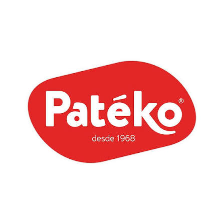
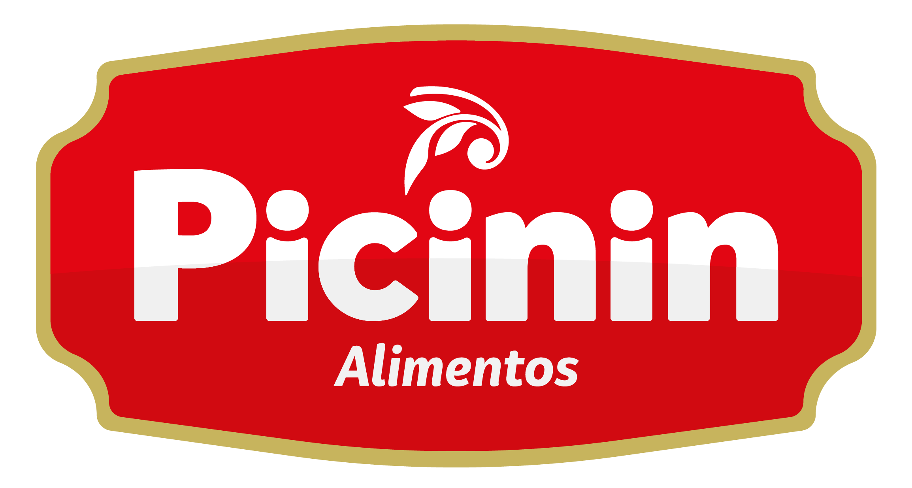

Proteção e atenção
Um ambiente de cuidado, segurança e afeto, respeitando as necessidades de cada criança.
Um espaço de acolhimento onde cada criança recebe cuidado, atenção e oportunidades para se desenvolver com alegria e segurança.

Desde 1960, o Lar da Criança Fermino Magnani oferece apoio às famílias de Santa Cruz do Rio Pardo, com acolhimento, alimentação, proteção e atividades que valorizam a infância.
Presença, carinho e compromisso com a infância.

O Lar da Criança Fermino Magnani é uma instituição filantrópica sem fins lucrativos, fundada em Santa Cruz do Rio Pardo. Sua trajetória começou com o propósito de apoiar mães e famílias que precisavam de um local seguro para deixar seus filhos durante o período de trabalho.
Hoje, a instituição segue dedicada ao acolhimento infantil, oferecendo atenção diária, alimentação, higiene, convivência e experiências que contribuem para o desenvolvimento das crianças.
Veja um pouco da nossa rotina →Uma rotina pensada para acolher e estimular.
Um ambiente de cuidado, segurança e afeto, respeitando as necessidades de cada criança.
Cuidados diários essenciais para o conforto, a saúde e o desenvolvimento infantil.
Momentos de leitura, criatividade, convivência e descobertas por meio do brincar.


O apoio da comunidade é muito importante para a continuidade do nosso trabalho. Sua contribuição ajuda a manter os cuidados e as atividades oferecidas pelo Lar.
Quero conversar sobre doaçõesSe desejar contribuir diretamente, utilize a chave PIX CNPJ da instituição.
Agradecemos a todos que apoiam nossa missão.

